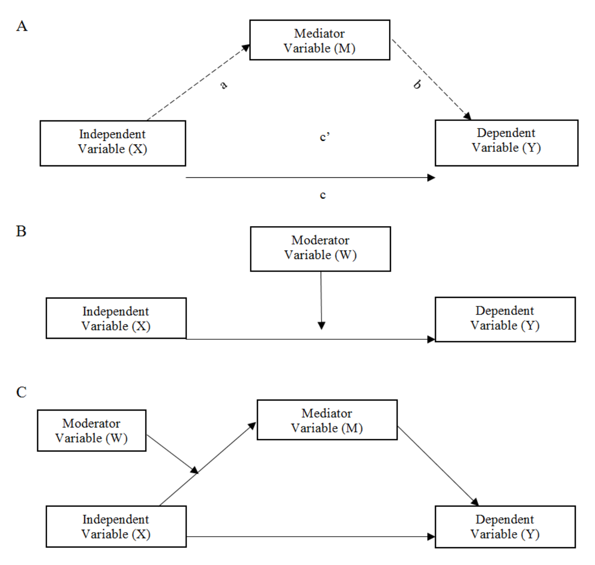
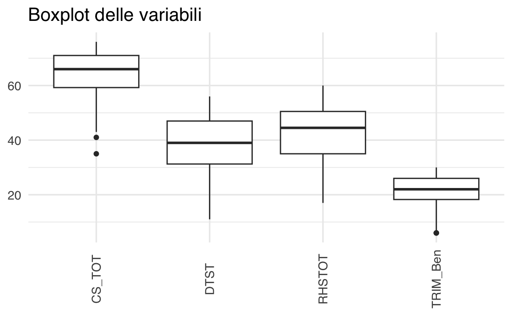
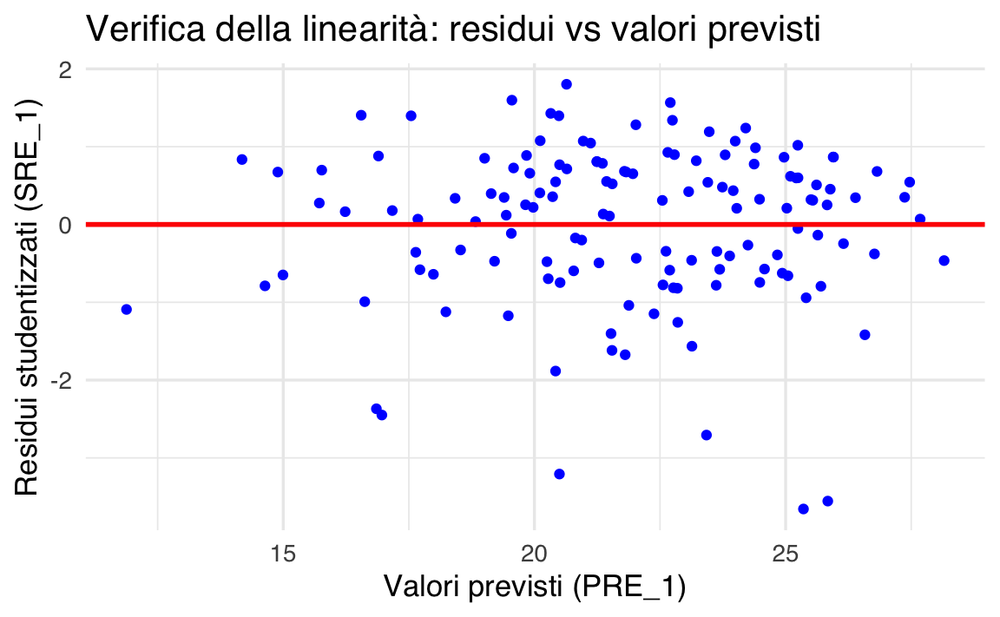
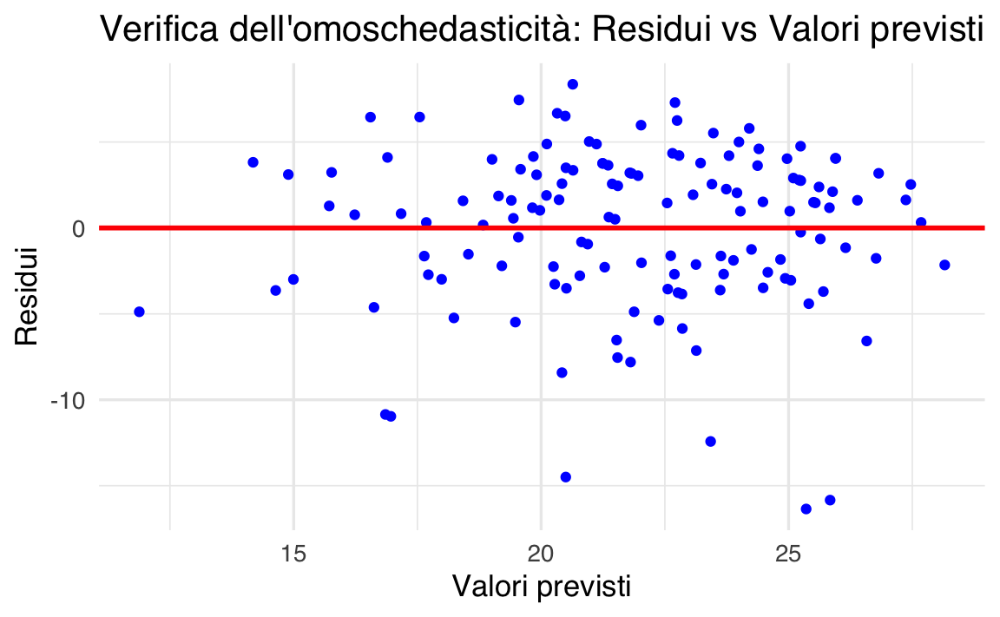
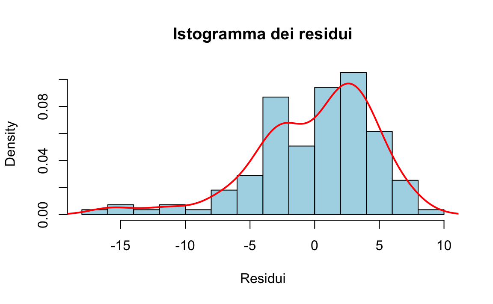
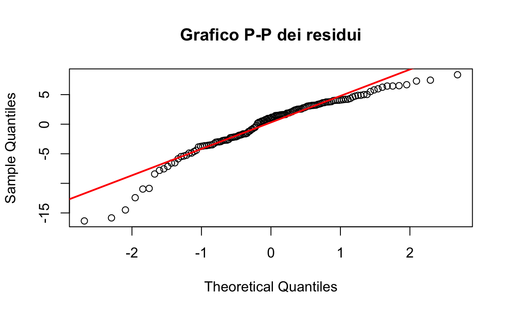
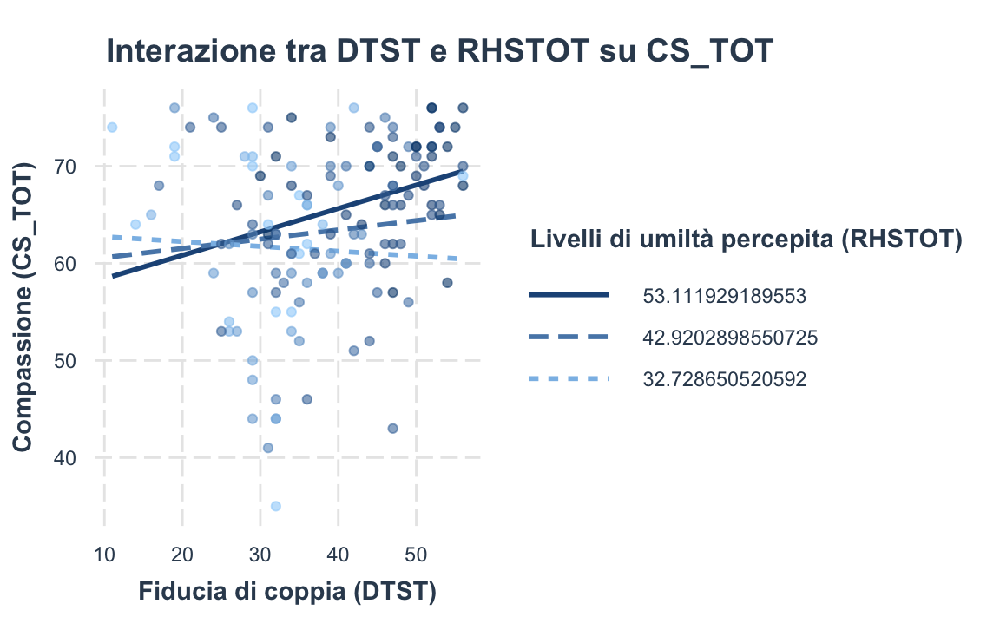

here::here("code", "_common.R") |>
source()
# Load packages
if (!requireNamespace("pacman")) install.packages("pacman")
pacman::p_load(lavaanExtra, lavaanPlot, semTools, haven, mediation, semPlot,
performance, car, lmtest, interactions, sjPlot)23 Riparazione affettiva post-infedeltà
In questo capitolo imparerai a
- distinguere tra moderazione, mediazione e mediazione moderata.
Prerequisiti
- Leggere A step-by-step tutorial for performing a moderated mediation analysis using PROCESS di Clement & Bradley-Garcia (2022)
Preparazione del Notebook
23.1 Introduzione
Lo scopo di questo capitolo è quello di discutere il tutorial di Clement & Bradley-Garcia (2022) in cui la path anaysis viene impiegata per tre analisi statistiche: il modello di moderazione, il modello di mediazione semplice, e il modello di mediazione moderata.
23.2 Modello di Mediazione Semplice
Il modello di mediazione esplora come una variabile indipendente (IV o X) influenzi una variabile dipendente (DV o Y) attraverso una variabile intermediaria, detta variabile mediatrice (M). In questo approccio, l’effetto dell’IV sulla DV si suddivide in due componenti: un effetto diretto, che rappresenta l’influenza dell’IV sulla DV al netto di M, e un effetto indiretto, che riflette il contributo di M nel collegare IV e DV.
Ad esempio, nel contesto delle relazioni di coppia, si potrebbe ipotizzare che la fiducia nel partner trasgressore (IV) favorisca il perdono (DV) attraverso una maggiore comprensione o empatia (M) (Clement & Bradley-Garcia, 2022; Hargrave & Hammer, 2016). Analizzare questa dinamica con un modello di mediazione semplice può fornire informazioni utili per interventi mirati, come focalizzarsi su strategie per migliorare la fiducia e l’empatia, promuovendo così il perdono.
Un modello di mediazione semplice si basa quindi su questa struttura sequenziale:
- IV → M: L’IV influenza direttamente la variabile mediatrice.
- M → DV: La variabile mediatrice influisce sulla DV.
- IV → DV (effetto diretto): L’IV mantiene un’influenza residua sulla DV anche al netto dell’effetto di M.
L’obiettivo principale è quantificare l’effetto indiretto, che rappresenta la relazione mediata. Questo modello consente di identificare percorsi specifici di influenza e di valutare se e come una variabile intermediaria contribuisca alla relazione tra IV e DV.

La letteratura mostra che la fiducia in un partner romantico è associata alla compassione verso tale partner (Salazar, 2015). A sua volta, la compassione risulta essere uno dei principali predittori di perdono (Davis, 2017). Sulla base di queste evidenze, si può ipotizzare che la fiducia contribuisca a promuovere il perdono attraverso la compassione per il partner romantico.
Per testare questa ipotesi, si può impiegare un modello di mediazione in cui la fiducia nel partner romantico influenza la compassione (percorso “a”), e la compassione, a sua volta, influenza il perdono (percorso “b”). L’effetto indiretto (ab) rappresenta dunque l’influenza che la fiducia esercita sul perdono passando attraverso la compassione. Se l’analisi statistica mostra che questo effetto indiretto è solido, si può concludere che la compassione media l’associazione tra fiducia e perdono. Se invece l’effetto indiretto non risulta significativo, non è possibile affermare che la compassione ricopra un ruolo di mediazione.
Oltre all’effetto indiretto, il modello di mediazione consente di esaminare anche l’effetto diretto della fiducia sul perdono, controllando per la compassione. In altre parole, si valuta se la fiducia nel partner romantico rimanga un predittore significativo del perdono quando la compassione viene mantenuta costante. In questa prospettiva, l’effetto totale (c) del modello di mediazione rappresenta la somma dell’effetto diretto (c′) e dell’effetto indiretto (a × b). Il valore di (a × b) rappresenta il prodotto dei percorsi a e b, mentre c = c′ + a × b.
Secondo la letteratura (Meule, 2019), si parla di “mediazione completa” quando l’effetto indiretto è significativo e l’effetto diretto non lo è; si parla invece di “mediazione parziale” quando entrambi gli effetti (diretto e indiretto) risultano significativi.
In conclusione, un modello di mediazione semplice può far luce su come la compassione per il partner romantico sia associata alla fiducia in quel partner e al perdono. Al contempo, per chiarire in quali condizioni la fiducia e la compassione siano più o meno correlate, occorre prendere in considerazione un modello di moderazione.
23.3 Modello di Moderazione
In un modello di moderazione, l’interesse è comprendere se una terza variabile, detta variabile moderatrice (W), influenzi la forza o la direzione della relazione tra la variabile indipendente (IV) e la variabile dipendente (DV). Come sottolinea Hayes (2018, p. 220):
“Identificare un moderatore di un effetto aiuta a stabilire le condizioni limite di quell’effetto o le circostanze, gli stimoli o il tipo di persone per cui l’effetto è maggiore o minore, presente o assente, positivo o negativo, e così via.”
Da un punto di vista statistico, verificare un modello di moderazione equivale a testare l’interazione tra fattori, come avviene nell’analisi della varianza (ANOVA; Frazier, Tix, & Barron, 2004). Si parla di effetto di interazione quando l’effetto dell’IV sulla DV varia in funzione dei livelli di W (Hayes, 2018). In altri termini, il ricercatore si chiede se l’associazione tra IV e DV sia più o meno forte (o addirittura diversa in segno) a seconda del valore assunto dal moderatore.
Come illustrato in Figura 23.1 B, un modello di moderazione può spiegare condizioni specifiche in cui una determinata relazione si presenta più o meno intensa. Tornando all’esempio di fiducia, compassione e perdono, ci si potrebbe domandare in quali circostanze la fiducia favorisca maggiormente la compassione. Nella letteratura sui comportamenti prosociali, l’umiltà è stata identificata come elemento cruciale per la coltivazione della compassione (Worthington & Allison, 2018). Diversi studi evidenziano che percepire il proprio partner romantico come umile è associato al vederlo anche come compassionevole (McDonald, Olson, Goddard, & Marshall, 2018), e che la fiducia è positivamente correlata a livelli di umiltà (Wang, Edwards, & Hill, 2017). Di conseguenza, è plausibile ipotizzare che l’effetto della fiducia sulla compassione vari a seconda di quanto il partner venga considerato umile, configurando così un tipico esempio di moderazione.
23.4 Modello di Mediazione Moderata
Il concetto di mediazione moderata, introdotto da James e Brett (1984), si riferisce all’analisi di come una variabile moderatrice (W) possa influenzare l’intensità o la presenza di un effetto indiretto (Preacher, Rucker, & Hayes, 2007). In altre parole, si parla di mediazione moderata quando l’ampiezza dell’effetto di mediazione varia in funzione dei livelli del moderatore (Preacher et al., 2007).
Come illustrato in Figura 23.1 C, in un modello di mediazione moderata la relazione tra una variabile indipendente (X) e una variabile dipendente (Y) mediata da un mediatore (M) cambia a seconda del valore assunto da W. Tornando all’esempio di fiducia, umiltà, compassione e perdono, è possibile ipotizzare che la fiducia nel partner romantico (X) eserciti il proprio effetto sul perdono (Y) per il tramite della compassione (M), ma che la forza di questo processo di mediazione sia potenziata (o attenuata) dalla percezione del partner come umile (W). In pratica, quando il partner è percepito come altamente umile, l’effetto indiretto di X su Y attraverso M potrebbe risultare particolarmente marcato; viceversa, a livelli bassi di umiltà, la mediazione potrebbe attenuarsi o persino annullarsi.
L’analisi di mediazione moderata, pertanto, consente di cogliere in che modo e in quali condizioni un processo di mediazione si inneschi e, di conseguenza, di formulare ipotesi e interventi mirati, basati sulle circostanze che rafforzano o indeboliscono l’effetto di X su Y attraverso M.
23.5 Esempio di Mediazione Moderata
Nel suo tutorial, Clement & Bradley-Garcia (2022) presenta i dati di uno studio che ha indagato l’associazione tra la fiducia di coppia, la compassione verso il partner responsabile di un’offesa, la percezione di quel partner come umile e il perdono in persone che avevano sperimentato un “attaccamento ferito”. Secondo Johnson, Makinen e Millikin (2001), le ferite da attaccamento consistono in una violazione percepita della fiducia o in un abbandono verificatosi in un momento critico, in cui la persona ferita necessitava del sostegno e della cura del partner.
Nell’ambito di questo studio, la fiducia di coppia è stata definita come il grado di onestà e di buona volontà che il partner ferito attribuisce a chi ha commesso l’offesa (Larzelere & Huston, 1980). Un aspetto fondamentale per la risoluzione delle ferite da attaccamento, nonché per il ripristino della fiducia nella relazione romantica, è il perdono. Quest’ultimo è stato qui concettualizzato come la presenza di livelli elevati di motivazioni benevolenti (ad es. buona volontà) e livelli bassi di motivazioni di evitamento o vendetta nei confronti del partner offensore.
Partecipanti
Il campione utilizzato per questo tutorial era composto da 138 persone che hanno riferito di aver vissuto una ferita da attaccamento nella loro attuale relazione romantica e di aver perdonato il proprio partner.
I partecipanti hanno completato i questionari auto-compilati online.
I partecipanti hanno descritto brevemente la ferita da attaccamento subita nella relazione e indicato se avevano perdonato o meno il partner romantico per tale ferita (sì/no).
La fiducia di coppia è stata misurata utilizzando la Dyadic Trust Scale (DTS; Larzelere & Huston, 1980), composta da 8 item valutati su una scala da 1 (fortemente d’accordo) a 7 (fortemente in disaccordo).
La compassione verso il partner è stata misurata con la Compassion Scale (CS; Pommier, Neff, & Tóth-Király, 2020), modificata per riflettere la compassione verso il partner che ha commesso l’offesa. La scala includeva 16 item valutati da 1 (quasi mai) a 5 (quasi sempre).
La percezione del partner come umile è stata misurata con la Relational Humility Scale (RHS; Davis et al., 2011), modificata per riflettere i sentimenti attuali del partner ferito verso il partner che ha commesso l’offesa. Gli item sono stati valutati su una scala da 1 (fortemente in disaccordo) a 5 (fortemente d’accordo).
Il perdono del partner che ha commesso l’offesa è stato misurato con il Transgressions-related Interpersonal Motivations Inventory (TRIM; McCullough et al., 1998; McCullough, Fincham, & Tsang, 2003). Il TRIM misura:
- Motivazione ad evitare il partner.
- Motivazione a cercare vendetta.
- Motivazione a dimostrare benevolenza verso il partner.
Per questo studio, il perdono è stato definito come bassi livelli di motivazione ad evitare o vendicarsi del partner, e alti livelli di motivazione benevolente verso di lui/lei. L’esempio discusso nel tutorial include solo la sottoscala della benevolenza del TRIM-18.
# Load the data from SPSS file
data <- read_sav(here::here("data", "clement_2022.sav"))glimpse(data)
#> Rows: 138
#> Columns: 4
#> $ CS_TOT <dbl> 58, 68, 66, 70, 70, 44, 66, 76, 67, 43, 66, 68, 68, 69, 7…
#> $ RHSTOT <dbl> 59, 53, 52, 35, 55, 36, 53, 54, 49, 45, 27, 52, 34, 29, 4…
#> $ TRIM_Ben <dbl> 19, 22, 26, 24, 25, 12, 21, 29, 30, 6, 25, 17, 29, 22, 9,…
#> $ DTST <dbl> 54, 51, 48, 34, 48, 32, 52, 52, 49, 47, 36, 34, 47, 56, 5…# Statistiche descrittive
describe(data)
#> vars n mean sd median trimmed mad min max range skew
#> CS_TOT 1 138 64.2 8.53 66.0 65.0 8.15 35 76 41 -0.88
#> RHSTOT 2 138 42.9 10.19 44.5 43.3 11.12 17 60 43 -0.33
#> TRIM_Ben 3 138 21.9 5.68 22.0 22.4 5.93 6 30 24 -0.74
#> DTST 4 138 38.6 10.25 39.0 39.0 11.86 11 56 45 -0.26
#> kurtosis se
#> CS_TOT 0.50 0.73
#> RHSTOT -0.57 0.87
#> TRIM_Ben 0.12 0.48
#> DTST -0.64 0.87# Identificazione degli outliers per ogni variabile
outliers_results <- check_outliers(data)
# Visualizzazione dei risultati
print(outliers_results)
#> OK: No outliers detected.
#> - Based on the following method and threshold: mahalanobis (20).
#> - For variables: CS_TOT, RHSTOT, TRIM_Ben, DTST# Visualizzare un boxplot con outliers
boxplot(data, main = "Boxplot delle variabili", col = "lightblue", las = 2)
23.5.1 Indipendenza
Nella regressione lineare, l’assunzione di indipendenza richiede che i residui del modello siano indipendenti l’uno dall’altro. In altre parole, l’errore commesso nel predire il valore di un partecipante non deve influenzare l’errore commesso nel predire il valore di un altro partecipante. Nel nostro caso, ciò significa che l’errore nella stima del punteggio di benevolenza di una persona non dovrebbe influenzare l’errore nella stima del punteggio di un’altra.
Per verificare l’indipendenza dei residui, si utilizza la statistica di Durbin-Watson, che rileva la presenza di autocorrelazione nei termini di errore (Uyanto, 2020). Questa statistica varia da 0 a 4, e valori compresi tra 1.5 e 2.5 indicano che l’assunzione di indipendenza è plausibilmente soddisfatta (Glen, 2022).
In R, la funzione durbinWatsonTest() del pacchetto car permette di calcolare la statistica di Durbin-Watson. Dopo aver definito un modello di regressione (nell’esempio riportato, con TRIM_Ben come variabile dipendente e DTST, CS_TOT, RHSTOT come predittori):
# Creazione del modello di regressione
model <- lm(TRIM_Ben ~ DTST + CS_TOT + RHSTOT, data = data)si esegue il test di Durbin-Watson nel seguente modo:
# Esecuzione del test di Durbin-Watson per verificare l'indipendenza dei residui
dw_test <- durbinWatsonTest(model)
# Visualizzazione del risultato
print(dw_test)
#> lag Autocorrelation D-W Statistic p-value
#> 1 -0.032 2.04 0.846
#> Alternative hypothesis: rho != 0Se il valore della statistica rientra tra 1.5 e 2.5, possiamo concludere che l’assunzione di indipendenza dei residui è rispettata. Una volta verificata questa condizione, è possibile procedere con il controllo della successiva assunzione di linearità.
23.5.2 Linearità
Un’ipotesi fondamentale nella regressione lineare è che esista una relazione lineare tra le variabili indipendenti (IV) e la variabile dipendente (DV). Questo significa che un cambiamento nelle IV comporta un cambiamento proporzionale nella DV. La verifica di questa assunzione è cruciale per garantire che il modello di regressione catturi correttamente la relazione tra le variabili.
Per valutare la linearità, si possono utilizzare grafici di dispersione che mettono in relazione le IV con la DV oppure grafici parziali per esaminare la relazione lineare tra ogni IV e la DV. Nel suo tutorial, Clement & Bradley-Garcia (2022) verifica l’assunzione di linearità tracciando un grafico tra i residui studentizzati (SRE_1) e i valori previsti non standardizzati (PRE_1).
# Calcolare i residui studentizzati e i valori previsti
SRE_1 <- rstudent(model) # Residui studentizzati
PRE_1 <- predict(model) # Valori previsti non standardizzati
# Creare un grafico di dispersione per verificare la linearità
plot(PRE_1, SRE_1,
main = "Verifica della linearità: residui vs valori previsti",
xlab = "Valori previsti (PRE_1)",
ylab = "Residui studentizzati (SRE_1)",
pch = 19, col = "blue"
)
abline(h = 0, col = "red", lwd = 2)
Interpretazione:
- se i punti nel grafico sono distribuiti casualmente attorno alla linea orizzontale a residuo zero (linea rossa), l’assunzione di linearità è soddisfatta;
- la presenza di pattern evidenti (come curve o trend sistematici) indica una possibile violazione della linearità, suggerendo che il modello di regressione potrebbe non essere adeguato.
23.5.3 Omoschedasticità
L’assunzione di omoschedasticità richiede che la variabilità degli errori (residui) rimanga costante per tutti i valori delle variabili indipendenti (IV). In altre parole, l’errore nella relazione tra le IV e la variabile dipendente (DV) non dovrebbe aumentare o diminuire sistematicamente in funzione dei valori previsti della DV. Quando questa assunzione viene violata, si parla di eteroschedasticità, che si verifica quando la variabilità degli errori cambia al variare dei valori previsti (Osborne & Waters, 2002).
23.5.3.1 Verifica visiva dell’omoschedasticità
Per valutare l’omoschedasticità, possiamo utilizzare un grafico di dispersione che rappresenta i residui rispetto ai valori previsti:
# Calcolo dei residui e dei valori previsti
residuals <- resid(model)
predicted_values <- predict(model)
# Grafico di dispersione per verificare l'omoschedasticità
plot(predicted_values, residuals,
main = "Verifica dell'omoschedasticità: Residui vs Valori previsti",
xlab = "Valori previsti",
ylab = "Residui",
pch = 19, col = "blue"
)
abline(h = 0, col = "red", lwd = 2)
- Se i punti nel grafico sono distribuiti casualmente attorno alla linea orizzontale (residui pari a 0) e formano una distribuzione rettangolare uniforme, l’assunzione di omoschedasticità è rispettata.
- Se i punti mostrano una dispersione non uniforme (ad esempio, un cono che si allarga o si restringe, o una forma curva), è probabile che ci sia eteroschedasticità e che l’assunzione sia violata.
23.5.3.2 Test statistico per l’omoschedasticità
Oltre al controllo visivo, è possibile eseguire un test formale, come il test di Breusch-Pagan, disponibile nel pacchetto lmtest:
# Esecuzione del test di Breusch-Pagan
bptest(model)
#>
#> studentized Breusch-Pagan test
#>
#> data: model
#> BP = 3, df = 3, p-value = 0.3-
Interpretazione del p-value:
- Se il p-value è elevato (di solito > 0.05), non ci sono evidenze di eteroschedasticità e l’assunzione di omoschedasticità è plausibilmente soddisfatta.
- Se il p-value è basso (di solito < 0.05), si rileva eteroschedasticità, indicando una violazione dell’assunzione.
23.5.3.3 Cosa fare in caso di eteroschedasticità?
Se l’assunzione di omoschedasticità è violata, ci sono diversi approcci per affrontare il problema:
- Trasformazione delle variabili: Applicare trasformazioni logaritmiche o di potenza alle variabili può ridurre l’eteroschedasticità.
- Stime robuste: Utilizzare errori standard robusti per ridurre l’impatto dell’eteroschedasticità sui risultati del modello.
- Modelli alternativi: Considerare modelli che tengano conto dell’eteroschedasticità, come la regressione ponderata.
Questo tipo di analisi aiuta a garantire che le inferenze statistiche basate sul modello di regressione siano valide e affidabili.
23.5.4 Multicollinearità
La multicollinearità si verifica quando due o più variabili indipendenti (IV) sono fortemente correlate tra loro, rendendo difficile isolare gli effetti unici di ciascuna variabile sulla variabile dipendente (DV). Questo problema si manifesta quando i punteggi di una o più IV sono altamente prevedibili in base alle altre IV incluse nel modello (Kim, 2019). La presenza di multicollinearità può compromettere l’interpretazione dei coefficienti di regressione e ridurre l’affidabilità dei risultati.
23.5.4.1 Come verificare la multicollinearità
Per valutare la multicollinearità, possiamo utilizzare due metriche principali:
- Fattore di inflazione della varianza (VIF): Misura quanto la varianza stimata di un coefficiente di regressione è aumentata a causa della multicollinearità.
- Statistica di tolleranza: Rappresenta il reciproco del VIF ed esprime la proporzione della varianza di una variabile indipendente che non è spiegata dalle altre IV.
Criteri di riferimento:
- La tolleranza dovrebbe essere superiore a 0.1 (valori più bassi indicano multicollinearità).
- Il VIF dovrebbe essere inferiore a 10 (Miles, 2005).
23.5.4.2 Calcolo del VIF in R
# Calcolo del VIF per le variabili indipendenti
vif_values <- vif(model)
# Visualizzazione dei valori VIF
print(vif_values)
#> DTST CS_TOT RHSTOT
#> 1.56 1.09 1.5923.5.4.3 Interpretazione dei risultati
- Valori di VIF inferiori a 10: Non ci sono problemi significativi di multicollinearità.
- Valori di VIF superiori a 10: È presente multicollinearità nel modello, e potrebbe essere necessario intervenire.
23.5.4.4 Come affrontare la multicollinearità
Se si riscontra multicollinearità, è possibile considerare le seguenti strategie:
- Rimuovere variabili ridondanti: Identificare le IV che contribuiscono meno al modello o sono fortemente correlate tra loro, ed eliminarle.
- Combinare variabili correlate: Creare indici compositi o utilizzare tecniche di riduzione della dimensionalità come l’analisi delle componenti principali (PCA).
- Standardizzare le variabili: In alcuni casi, la standardizzazione può ridurre gli effetti della multicollinearità.
- Utilizzare modelli robusti: Considerare approcci come la regressione ridge o la regressione con penalizzazione (es. LASSO) che possono gestire la multicollinearità.
Affrontare la multicollinearità è essenziale per garantire un’interpretazione affidabile dei coefficienti di regressione e la validità complessiva del modello.
23.5.5 Normalità
L’assunzione di normalità richiede che i residui, ossia gli errori nella stima del modello di regressione, siano distribuiti normalmente (Hayes, 2018). Questa assunzione è importante principalmente per garantire la validità dei test statistici utilizzati per valutare i coefficienti di regressione, poiché si basa sull’ipotesi di normalità degli errori.
23.5.5.1 Verifica della normalità
Per verificare questa assunzione, possiamo utilizzare strumenti grafici per un’ispezione visiva e, se necessario, test statistici.
23.5.5.1.1 Verifiche grafiche
- Istogramma dei residui: Visualizzare la distribuzione dei residui sovrapponendo una curva di densità normale per verificare se i residui seguono una forma a campana.
- Grafico P-P (Probability-Probability Plot): Confrontare la distribuzione cumulativa dei residui con una distribuzione normale teorica. Se i punti si allineano lungo la diagonale, la normalità è rispettata.
Anche se ci sono piccole deviazioni dalla normalità, la regressione è robusta a violazioni non gravi di questa assunzione, quindi l’analisi può essere comunque considerata valida.
23.5.5.1.2 Verifica con l’istogramma
Il seguente codice crea un istogramma dei residui con una curva di densità normale sovrapposta:
# Calcolo dei residui
residuals <- resid(model)
# Creare l'istogramma con curva di normalità sovrapposta
hist(
residuals,
prob = TRUE, main = "Istogramma dei residui",
xlab = "Residui", col = "lightblue", border = "black"
)
# Sovrapporre la curva di densità normale
lines(density(residuals), col = "red", lwd = 2)
Interpretazione: Se la curva di densità (linea rossa) segue la forma dell’istogramma, possiamo concludere che i residui sono distribuiti normalmente.
23.5.5.1.3 Verifica con il grafico P-P
Il grafico P-P è un ulteriore strumento per verificare la normalità:
# Creazione del P-P plot
qqnorm(residuals, main = "Grafico P-P dei residui")
qqline(residuals, col = "red", lwd = 2)
Interpretazione: Se i punti nel grafico si distribuiscono lungo la linea diagonale (linea rossa), i residui sono distribuiti normalmente. Deviazioni sistematiche dalla linea diagonale indicano violazioni della normalità.
23.5.5.2 Test statistici per la normalità
Se necessario, è possibile utilizzare test statistici come il test di Shapiro-Wilk o il test di Kolmogorov-Smirnov per valutare formalmente la normalità dei residui:
# Test di Shapiro-Wilk
shapiro.test(residuals)
#>
#> Shapiro-Wilk normality test
#>
#> data: residuals
#> W = 0.9, p-value = 5e-06Interpretazione del p-value:
- p > 0.05: Non ci sono evidenze di una deviazione significativa dalla normalità.
- p ≤ 0.05: I residui non seguono una distribuzione normale.
In conclusione, se i residui mostrano piccole deviazioni dalla normalità, ciò potrebbe non compromettere significativamente l’analisi, poiché la regressione lineare è relativamente robusta a violazioni lievi di questa assunzione. Tuttavia, in caso di deviazioni gravi, si potrebbe considerare:
- Trasformazioni delle variabili (ad esempio, logaritmica o radice quadrata).
- Modelli alternativi come modelli di regressione robusti o non parametrici.
La verifica della normalità è una parte essenziale del controllo delle assunzioni, ma va interpretata nel contesto generale della robustezza del modello.
23.6 Analisi di Moderazione
Per valutare se esiste una relazione di moderazione tra DTST (fiducia di coppia) e RHSTOT (umiltà percepita del partner) sull’esito CS_TOT (compassione verso il partner che ha ferito), possiamo analizzare i risultati di un modello di regressione lineare con interazione:
# Creare il modello di moderazione
model <- lm(CS_TOT ~ DTST * RHSTOT, data = data)
summary(model)
#>
#> Call:
#> lm(formula = CS_TOT ~ DTST * RHSTOT, data = data)
#>
#> Residuals:
#> Min 1Q Median 3Q Max
#> -25.859 -4.131 0.851 5.954 15.033
#>
#> Coefficients:
#> Estimate Std. Error t value Pr(>|t|)
#> (Intercept) 74.85822 9.90301 7.56 5.7e-12
#> DTST -0.51699 0.27916 -1.85 0.066
#> RHSTOT -0.35486 0.24140 -1.47 0.144
#> DTST:RHSTOT 0.01427 0.00618 2.31 0.022
#>
#> Residual standard error: 8.1 on 134 degrees of freedom
#> Multiple R-squared: 0.117, Adjusted R-squared: 0.0976
#> F-statistic: 5.94 on 3 and 134 DF, p-value: 0.000781Dall’output della regressione lineare, possiamo osservare quanto segue:
- Intercetta: Il valore stimato è 74.86 (errore standard = 9.90), risultando altamente significativo (p < 0.001).
- Effetto principale di DTST (fiducia di coppia): L’effetto è negativo (b = -0.517) ma non significativo al livello del 5% (p = 0.0662).
- Effetto principale di RHSTOT (umiltà percepita): L’effetto è anch’esso negativo (b = -0.355) e non significativo (p = 0.1439).
- Interazione tra DTST e RHSTOT: L’interazione è significativa (b = 0.0143, p = 0.0224), suggerendo che l’effetto di DTST su CS_TOT varia in base ai livelli di RHSTOT.
La significatività dell’interazione indica che la relazione tra DTST (fiducia di coppia) e CS_TOT (compassione) dipende dai livelli di RHSTOT (umiltà percepita del partner). In particolare:
- Quando l’umiltà percepita (RHSTOT) è alta, la fiducia di coppia (DTST) ha un effetto maggiore sulla compassione (CS_TOT).
- Viceversa, a livelli bassi di umiltà percepita, l’effetto della fiducia sulla compassione potrebbe attenuarsi.
23.6.1 Visualizzazione delle Pendenze Semplici
Per comprendere meglio l’interazione, possiamo visualizzare l’effetto di DTST (fiducia di coppia) su CS_TOT (compassione) a tre livelli di RHSTOT:
- Alla media di RHSTOT.
- A ±1 deviazione standard dalla media.
# Calcolo della media e delle deviazioni standard di RHSTOT
mean_RHSTOT <- mean(data$RHSTOT, na.rm = TRUE)
sd_RHSTOT <- sd(data$RHSTOT, na.rm = TRUE)
# Visualizzare le pendenze semplici dell'interazione
interact_plot(model,
pred = DTST, modx = RHSTOT,
modx.values = c(mean_RHSTOT - sd_RHSTOT, mean_RHSTOT, mean_RHSTOT + sd_RHSTOT),
plot.points = TRUE,
main.title = "Interazione tra DTST e RHSTOT su CS_TOT",
x.label = "Fiducia di coppia (DTST)",
y.label = "Compassione (CS_TOT)",
legend.main = "Livelli di umiltà percepita (RHSTOT)"
)
23.6.2 Interpretazione del Grafico
Dal grafico risultante, è possibile osservare:
- A livelli elevati di RHSTOT: L’effetto della fiducia di coppia (DTST) sulla compassione (CS_TOT) è più forte e positivo.
- A livelli medi di RHSTOT: L’effetto è moderato.
- A livelli bassi di RHSTOT: L’effetto si riduce o può persino diventare trascurabile.
Questa visualizzazione conferma che la percezione dell’umiltà del partner modula l’effetto della fiducia di coppia sulla compassione, fornendo un’interpretazione più chiara del ruolo della moderazione.
23.7 Analisi della Mediazione
Per comprendere la relazione tra la variabile indipendente (X, la fiducia di coppia) e la variabile dipendente (Y, il perdono), Clement & Bradley-Garcia (2022) valutano sia l’effetto diretto che l’effetto mediato da una variabile intermediaria (M, la compassione). A tal fine, viene utilizzato un modello di mediazione.
Il modello considera tre componenti principali:
- Effetto diretto (\(c'\)): l’influenza diretta di X (fiducia di coppia) su Y (perdono).
- Effetto mediato (\(ab\)): l’effetto indiretto di X su Y attraverso M (compassione).
- Effetto totale (\(c\)): la combinazione degli effetti diretto e mediato.
# Definizione del modello di mediazione
model <- "
# Effetto diretto di DTST su TRIM_Ben
TRIM_Ben ~ c_prime*DTST
# Effetto di DTST su CS_TOT (mediazione)
CS_TOT ~ a*DTST
# Effetto di CS_TOT su TRIM_Ben (mediazione)
TRIM_Ben ~ b*CS_TOT
# Effetto indiretto (a * b)
ab := a*b
# Effetto totale di DTST su TRIM_Ben
total := c_prime + ab
"
# Esegui il modello con i dati
fit <- sem(model, data = data)
# Riassunto dei risultati
summary(fit, fit.measures = TRUE, standardized = TRUE, rsquare = TRUE) |>
print()
#> lavaan 0.6-19 ended normally after 1 iteration
#>
#> Estimator ML
#> Optimization method NLMINB
#> Number of model parameters 5
#>
#> Number of observations 138
#>
#> Model Test User Model:
#>
#> Test statistic 0.000
#> Degrees of freedom 0
#>
#> Model Test Baseline Model:
#>
#> Test statistic 60.916
#> Degrees of freedom 3
#> P-value 0.000
#>
#> User Model versus Baseline Model:
#>
#> Comparative Fit Index (CFI) 1.000
#> Tucker-Lewis Index (TLI) 1.000
#>
#> Loglikelihood and Information Criteria:
#>
#> Loglikelihood user model (H0) -895.673
#> Loglikelihood unrestricted model (H1) -895.673
#>
#> Akaike (AIC) 1801.345
#> Bayesian (BIC) 1815.981
#> Sample-size adjusted Bayesian (SABIC) 1800.163
#>
#> Root Mean Square Error of Approximation:
#>
#> RMSEA 0.000
#> 90 Percent confidence interval - lower 0.000
#> 90 Percent confidence interval - upper 0.000
#> P-value H_0: RMSEA <= 0.050 NA
#> P-value H_0: RMSEA >= 0.080 NA
#>
#> Standardized Root Mean Square Residual:
#>
#> SRMR 0.000
#>
#> Parameter Estimates:
#>
#> Standard errors Standard
#> Information Expected
#> Information saturated (h1) model Structured
#>
#> Regressions:
#> Estimate Std.Err z-value P(>|z|) Std.lv Std.all
#> TRIM_Ben ~
#> DTST (c_pr) 0.148 0.040 3.691 0.000 0.148 0.267
#> CS_TOT ~
#> DTST (a) 0.197 0.069 2.864 0.004 0.197 0.237
#> TRIM_Ben ~
#> CS_TOT (b) 0.292 0.048 6.058 0.000 0.292 0.438
#>
#> Variances:
#> Estimate Std.Err z-value P(>|z|) Std.lv Std.all
#> .TRIM_Ben 21.819 2.627 8.307 0.000 21.819 0.681
#> .CS_TOT 68.186 8.209 8.307 0.000 68.186 0.944
#>
#> R-Square:
#> Estimate
#> TRIM_Ben 0.319
#> CS_TOT 0.056
#>
#> Defined Parameters:
#> Estimate Std.Err z-value P(>|z|) Std.lv Std.all
#> ab 0.058 0.022 2.589 0.010 0.058 0.104
#> total 0.205 0.044 4.690 0.000 0.205 0.371L’output di lavaan fornisce informazioni dettagliate su tutti i percorsi del modello, inclusi gli effetti diretto, indiretto e totale, insieme ai coefficienti standardizzati e non standardizzati. Poiché il modello ha zero gradi di libertà, gli indici di adattamento globali (CFI, TLI, RMSEA) non sono interpretabili, quindi ci concentriamo sui coefficienti di percorso.
23.7.0.1 Effetto Diretto
-
Percorso diretto (\(c'\)): Il coefficiente standardizzato dell’effetto diretto di DTST (fiducia di coppia) su TRIM_Ben (perdono) è pari a 0.267, mentre il coefficiente non standardizzato è 0.148 (SE = 0.040, \(z = 3.691\), \(p < 0.001\)).
- Questo risultato indica che la fiducia di coppia ha un effetto positivo diretto sul perdono, indipendentemente dalla compassione verso il partner.
23.7.0.2 Effetto Indiretto
-
Percorso indiretto (\(ab\)): L’effetto mediato da CS_TOT (compassione) ha un coefficiente standardizzato pari a 0.104 e un coefficiente non standardizzato di 0.058 (SE = 0.022, \(z = 2.589\), \(p = 0.010\)).
- Questo suggerisce che la fiducia di coppia influisce sul perdono anche attraverso la compassione. In particolare, maggiore fiducia nel partner favorisce un incremento della compassione, che a sua volta aumenta la propensione al perdono.
23.7.0.3 Effetto Totale
-
Percorso totale (\(c = c' + ab\)): L’effetto totale di DTST su TRIM_Ben è pari a 0.371 (coefficiente standardizzato) e 0.205 (coefficiente non standardizzato, SE = 0.044, \(z = 4.690\), \(p < 0.001\)).
- Questo risultato evidenzia che la fiducia di coppia ha un’influenza complessiva positiva sul perdono, combinando l’effetto diretto e quello mediato.
23.7.1 Varianza Spiegata (R²)
- Perdono (\(TRIM_Ben\)): La fiducia di coppia (DTST) e la compassione (CS_TOT) spiegano il 31.9% della varianza in TRIM_Ben. Questo suggerisce che il modello rappresenta un’importante porzione della variabilità nel perdono.
- Compassione (\(CS_TOT\)): La fiducia di coppia spiega il 5.6% della varianza in CS_TOT, indicando che la compassione è parzialmente influenzata dalla fiducia di coppia.
In sintesi, questi risultati suggeriscono che la fiducia nel partner è un elemento centrale per favorire il perdono. Inoltre, la compassione rappresenta un meccanismo importante che media questa relazione. Interventi mirati a rafforzare sia la fiducia che la compassione potrebbero migliorare la capacità di perdonare nelle relazioni di coppia, contribuendo così al benessere e alla resilienza dei partner.
23.7.2 Mediazione Moderata
La mediazione moderata combina mediazione e moderazione per analizzare come una variabile indipendente (X, ad esempio la fiducia di coppia) influenzi una variabile dipendente (Y, come il perdono) attraverso una variabile mediatrice (M, ad esempio la compassione), mentre una variabile moderatrice (W, come l’umiltà percepita del partner) condiziona i percorsi di relazione.
In questo approccio si distinguono tre componenti: - Effetto diretto: l’influenza di X su Y, modulata da W. - Percorso mediato: il contributo di M nel collegare X a Y, con possibilità di moderazione da parte di W. - Effetto complessivo: somma degli effetti diretto e mediato.
23.7.3 Analisi del Modello
Il codice seguente stima un modello di mediazione moderata, includendo effetti principali e di interazione:
model <- "
# Effetto diretto di X su Y
TRIM_Ben ~ c*DTST + b*CS_TOT + d*RHSTOT + e*DTST:RHSTOT
# Percorso mediato (X -> M -> Y)
CS_TOT ~ a*DTST + f*RHSTOT + g*DTST:RHSTOT
# Effetti indiretti, diretti e totali
indirect := a*b
direct := c
total := indirect + direct
"
# Stima del modello
fit <- sem(model, data = data, se = "bootstrap", bootstrap = 100)
# Resoconto del modello
summary(fit, fit.measures = TRUE, standardized = TRUE, rsquare = TRUE) |> print()Questo modello esplora come l’umiltà percepita (RHSTOT) moderi sia la relazione diretta tra fiducia di coppia (DTST) e perdono (TRIM_Ben), sia il percorso mediato attraverso la compassione (CS_TOT).
23.7.4 Risultati Principali
-
Effetto Diretto:
- Coefficiente: 0.203 (z = 1.378, p = 0.168). L’effetto diretto non è significativo ma suggerisce una relazione positiva tra fiducia di coppia e perdono.
-
Effetto Indiretto:
- Coefficiente: -0.149 (z = -1.435, p = 0.151). L’effetto mediato non contribuisce in modo rilevante.
-
Moderazione:
- L’interazione tra fiducia di coppia (DTST) e umiltà percepita (RHSTOT) su compassione (CS_TOT) è significativa (coefficiente: 0.014, z = 2.162, p = 0.031). La fiducia di coppia ha un effetto maggiore sulla compassione quando l’umiltà percepita è elevata.
-
Effetto Totale:
- Coefficiente: 0.054 (z = 0.380, p = 0.704). L’influenza complessiva della fiducia di coppia sul perdono è limitata.
-
Varianza Spiegata:
- Il modello spiega il 32.5% della varianza in TRIM_Ben e l’11.7% in CS_TOT. Questo indica un’influenza moderata sulle variabili chiave.
23.7.5 Interpretazione
I risultati suggeriscono che: - L’umiltà percepita del partner (RHSTOT) è cruciale per modulare il percorso tra fiducia di coppia (DTST) e compassione (CS_TOT). - Non emergono evidenze chiare di un effetto mediato significativo di DTST su TRIM_Ben tramite CS_TOT. - Sebbene la fiducia abbia un impatto complessivo limitato sul perdono, la moderazione da parte dell’umiltà percepita evidenzia l’importanza delle percezioni interpersonali nel rafforzare i legami emotivi e promuovere il perdono.
23.7.6 Conclusioni
Il modello analizzato evidenzia che l’umiltà percepita del partner (RHSTOT) gioca un ruolo centrale nel modulare la relazione tra fiducia di coppia (DTST), compassione (CS_TOT), e perdono (TRIM_Ben).
Sebbene l’effetto diretto della fiducia sul perdono non sia significativo, RHSTOT modera in modo significativo l’effetto di DTST su CS_TOT, suggerendo che percezioni positive del partner favoriscono una maggiore compassione. Tuttavia, non emergono evidenze di un effetto indiretto significativo di DTST su TRIM_Ben tramite CS_TOT.
In sintesi, il modello sottolinea l’importanza delle percezioni interpersonali nel promuovere la compassione, ma il loro impatto sul perdono rimane limitato.
23.7.7 Riflessioni Finali
Le tre analisi condotte delineano un quadro articolato delle relazioni tra fiducia di coppia (DTST), compassione verso il partner che ha ferito (CS_TOT) e perdono (TRIM_Ben).
I risultati indicano che la fiducia di coppia ha un’influenza diretta positiva sul perdono, sebbene in alcuni modelli questo effetto risulti meno robusto. Tuttavia, l’effetto mediato attraverso la compassione appare più consistente, evidenziando il ruolo centrale di quest’ultima nel favorire il perdono.
Un elemento fondamentale emerso è il ruolo della percezione dell’umiltà del partner (RHSTOT). Questa variabile non solo modera l’effetto della fiducia sulla compassione, ma amplifica l’influenza complessiva della fiducia sul perdono. In contesti in cui il partner è percepito come umile, l’effetto della fiducia sulla compassione è più forte, contribuendo così a rafforzare la propensione al perdono.
In sintesi, i risultati evidenziano che:
- La fiducia di coppia è rilevante per il perdono, ma il suo effetto è potenziato dalla compassione come mediatore.
- L’umiltà percepita del partner gioca un ruolo cruciale nel modellare il legame tra fiducia e compassione, sottolineando l’importanza del contesto relazionale.
- Il perdono dipende non solo dalla fiducia, ma anche dalla capacità di sviluppare compassione, particolarmente influenzata dalla percezione che il partner sia umile e disposto a riconoscere i propri errori.
Questi risultati suggeriscono che interventi per favorire il perdono nelle relazioni di coppia dovrebbero considerare sia il rafforzamento della fiducia sia il miglioramento delle dinamiche empatiche e della percezione di umiltà reciproca, promuovendo così una maggiore capacità di compassione e comprensione.
23.8 Session Info
sessionInfo()
#> R version 4.4.2 (2024-10-31)
#> Platform: aarch64-apple-darwin20
#> Running under: macOS Sequoia 15.3.1
#>
#> Matrix products: default
#> BLAS: /Library/Frameworks/R.framework/Versions/4.4-arm64/Resources/lib/libRblas.0.dylib
#> LAPACK: /Library/Frameworks/R.framework/Versions/4.4-arm64/Resources/lib/libRlapack.dylib; LAPACK version 3.12.0
#>
#> locale:
#> [1] C/UTF-8/C/C/C/C
#>
#> time zone: Europe/Rome
#> tzcode source: internal
#>
#> attached base packages:
#> [1] stats graphics grDevices utils datasets methods base
#>
#> other attached packages:
#> [1] sjPlot_2.8.17 interactions_1.2.0 lmtest_0.9-40
#> [4] zoo_1.8-12 car_3.1-3 carData_3.0-5
#> [7] performance_0.13.0 mediation_4.5.0 sandwich_3.1-1
#> [10] mvtnorm_1.3-3 Matrix_1.7-2 haven_2.5.4
#> [13] lavaanPlot_0.8.1 lavaanExtra_0.2.1 ggokabeito_0.1.0
#> [16] see_0.10.0 MASS_7.3-64 viridis_0.6.5
#> [19] viridisLite_0.4.2 ggpubr_0.6.0 ggExtra_0.10.1
#> [22] gridExtra_2.3 patchwork_1.3.0 bayesplot_1.11.1
#> [25] semTools_0.5-6 semPlot_1.1.6 lavaan_0.6-19
#> [28] psych_2.4.12 scales_1.3.0 markdown_1.13
#> [31] knitr_1.49 lubridate_1.9.4 forcats_1.0.0
#> [34] stringr_1.5.1 dplyr_1.1.4 purrr_1.0.4
#> [37] readr_2.1.5 tidyr_1.3.1 tibble_3.2.1
#> [40] ggplot2_3.5.1 tidyverse_2.0.0 here_1.0.1
#>
#> loaded via a namespace (and not attached):
#> [1] splines_4.4.2 later_1.4.1 datawizard_1.0.0
#> [4] XML_3.99-0.18 rpart_4.1.24 lifecycle_1.0.4
#> [7] Rdpack_2.6.2 rstatix_0.7.2 rprojroot_2.0.4
#> [10] globals_0.16.3 lattice_0.22-6 insight_1.0.2
#> [13] rockchalk_1.8.157 backports_1.5.0 magrittr_2.0.3
#> [16] openxlsx_4.2.8 Hmisc_5.2-2 rmarkdown_2.29
#> [19] yaml_2.3.10 httpuv_1.6.15 qgraph_1.9.8
#> [22] zip_2.3.2 pbapply_1.7-2 minqa_1.2.8
#> [25] RColorBrewer_1.1-3 multcomp_1.4-28 abind_1.4-8
#> [28] quadprog_1.5-8 nnet_7.3-20 TH.data_1.1-3
#> [31] jtools_2.3.0 listenv_0.9.1 arm_1.14-4
#> [34] parallelly_1.42.0 codetools_0.2-20 tidyselect_1.2.1
#> [37] ggeffects_2.2.0 farver_2.1.2 lme4_1.1-36
#> [40] broom.mixed_0.2.9.6 stats4_4.4.2 base64enc_0.1-3
#> [43] jsonlite_1.8.9 Formula_1.2-5 survival_3.8-3
#> [46] emmeans_1.10.7 tools_4.4.2 Rcpp_1.0.14
#> [49] glue_1.8.0 mnormt_2.1.1 xfun_0.50
#> [52] withr_3.0.2 fastmap_1.2.0 boot_1.3-31
#> [55] digest_0.6.37 mi_1.1 timechange_0.3.0
#> [58] R6_2.6.1 mime_0.12 estimability_1.5.1
#> [61] colorspace_2.1-1 lpSolve_5.6.23 gtools_3.9.5
#> [64] jpeg_0.1-10 DiagrammeR_1.0.11 generics_0.1.3
#> [67] data.table_1.16.4 corpcor_1.6.10 htmlwidgets_1.6.4
#> [70] pkgconfig_2.0.3 sem_3.1-16 gtable_0.3.6
#> [73] furrr_0.3.1 htmltools_0.5.8.1 png_0.1-8
#> [76] reformulas_0.4.0 rstudioapi_0.17.1 tzdb_0.4.0
#> [79] reshape2_1.4.4 coda_0.19-4.1 visNetwork_2.1.2
#> [82] checkmate_2.3.2 nlme_3.1-167 nloptr_2.1.1
#> [85] sjlabelled_1.2.0 parallel_4.4.2 miniUI_0.1.1.1
#> [88] foreign_0.8-88 pillar_1.10.1 grid_4.4.2
#> [91] vctrs_0.6.5 promises_1.3.2 OpenMx_2.21.13
#> [94] xtable_1.8-4 cluster_2.1.8 htmlTable_2.4.3
#> [97] evaluate_1.0.3 pbivnorm_0.6.0 cli_3.6.4
#> [100] kutils_1.73 compiler_4.4.2 rlang_1.1.5
#> [103] ggsignif_0.6.4 labeling_0.4.3 fdrtool_1.2.18
#> [106] sjmisc_2.8.10 plyr_1.8.9 stringi_1.8.4
#> [109] pander_0.6.5 munsell_0.5.1 lisrelToR_0.3
#> [112] pacman_0.5.1 sjstats_0.19.0 hms_1.1.3
#> [115] glasso_1.11 future_1.34.0 shiny_1.10.0
#> [118] rbibutils_2.3 igraph_2.1.4 broom_1.0.7
#> [121] RcppParallel_5.1.10